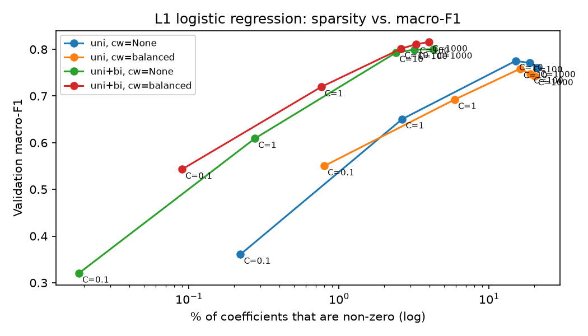
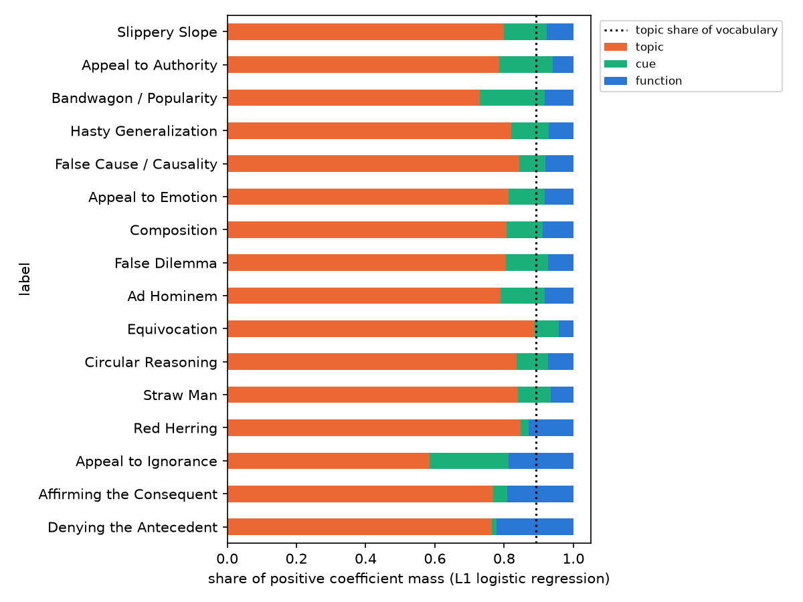
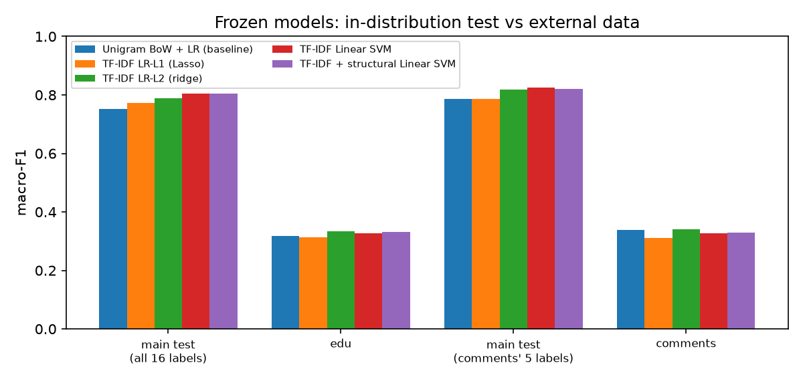
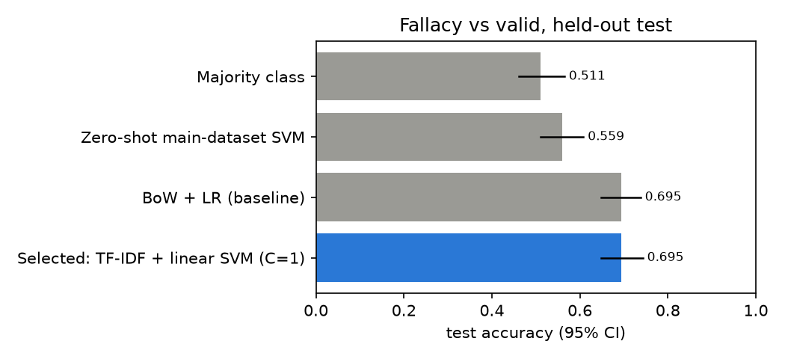
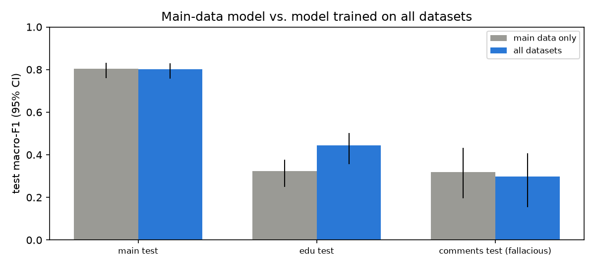

Two tools built on the project’s models. The shortcut inspector shows which words a prediction rests on; the cost-threshold tool shows what changes when a missed fallacy costs more, or less, than a false alarm. The full study is in the Research section.
Try it: does the model read the reasoning or the topic?
The word groups and the evidence behind them are explained in Shortcut audit.
- Pick a held-out argument: one from the main test split, or an online comment that is valid or fallacious. The list is grouped by what the inspector's model predicts. Or type your own below.
- Remove words: click single words, or use the buttons to drop a whole group. Coloured underlines show the group: topic, cue, function.
Topic words say what the argument is about (calculators, vaccines, homework). Cue words signal a reasoning pattern (everyone, either, because, expert, eventually). Function words are the small grammar words that hold a sentence together (the, of, is, to, and). - Read the bars: each bar is one fallacy's probability under a Lasso model trained on all datasets (main, LOGIC and online comments; notebook 13). The black tick is the value before your edits and the dashed line is the 0.5 decision threshold; if no bar reaches it, the model predicts no fallacy. If removing only topic words makes the fallacy disappear, the model was relying on the subject, not the reasoning.
Predicted probabilities (click a row to explain that label)
Active non-zero Lasso coefficients (largest contributions w·x)
Choosing a decision threshold by cost
A default cut-off of 0.5 implicitly assumes a missed fallacy costs as much as a false alarm. If a miss costs r times a false alarm, the cost-optimal rule for a calibrated probability is to flag the fallacy when p > 1 / (1 + r). The best model (linear SVM) gives margins, not probabilities, so it was wrapped in Platt scaling fitted with 5-fold cross-validation inside the training split. Its validation Brier score is 0.021, versus 0.027 for the over-confident Lasso model.

Precision–recall curve (test) and current operating point
Expected cost per argument (CFP = 1) as the cost ratio changes
Computed live from the calibrated SVM's test-set probabilities. The test split was not used to choose anything shown in this tool; it only displays the consequences of a threshold choice.
Do classical models detect logical fallacies, or memorise argument templates?
Question. To what extent do classical linear and margin-based classifiers rely on surface lexical shortcuts rather than structural argumentative features when identifying informal logical fallacies, and can L1 (Lasso) regularisation and support-vector margins reliably separate genuine rhetorical patterns from dataset-specific artefacts?
A multi-label study of 16 informal fallacies with TF-IDF features, Lasso and ridge logistic regression, PCA projections and SVMs, and an audit of how much the models rely on subject-matter shortcuts.
1 · The question
Research question. To what extent do classical linear and margin-based classifiers rely on surface lexical shortcuts rather than structural argumentative features when identifying informal logical fallacies, and can L1 (Lasso) regularisation and support-vector margins reliably separate genuine rhetorical patterns from dataset-specific artefacts?
Why it matters. Automated fallacy detectors are prone to shortcut learning: they can rely on frequent, emotionally loaded words instead of identifying the flaw in the reasoning. We evaluate binary and multi-label detection of informal fallacies, with a focus on Ad Hominem, False Dilemma and Slippery Slope, alongside valid arguments, using n-gram and structural (syntactic and rhetorical) features. A useful answer reports accuracy against an imbalanced baseline and inspects the learned weight vectors under each penalty, to measure how much predictive weight falls on surface tokens versus structural indicators.
A logical fallacy is an error in reasoning that makes an argument unsound or misleading even when its conclusion happens to be true: “If we allow calculators in class, students will forget arithmetic and the economy will collapse” is a slippery slope whatever one thinks of calculators.
- Unit (one row)
- One short natural-language argument (median 26 words).
- Target
- A 16-dimensional binary vector: which of 16 fallacies the argument contains (1–5 per argument, mean 1.33). This is multi-label classification.
- When a prediction is made
- At the moment a piece of text is available, e.g. a comment is posted. Only the text is used: no author, context, thread or metadata.
- What is not claimed
- That the models “understand” reasoning: we measure what their predictions depend on. The main dataset contains only fallacious arguments, so models trained on it are asked which fallacies are present; valid (fallacy-free) arguments come from the external datasets and are used in External data and Trained on all data.
Questions addressed
- Main question: do the models rely on lexical shortcuts rather than argument structure, and do L1 sparsity or SVM margins reduce that reliance? (Shortcut audit, Results)
- Q1: do word tokens or BPE subwords work better, and do bigrams help? (Preprocessing, Results)
- Q2: how do Bag-of-Words and TF-IDF compare when the model is held fixed? (Results)
- Q4: how does class imbalance affect rare fallacies? (Results)
- Q6: does performance drop when near-duplicate arguments cannot appear on both sides of a split? (Shortcut audit, D)
- How well are Ad Hominem, False Dilemma and Slippery Slope detected, with accuracy against an imbalanced baseline? (Results)
- Can a model tell fallacious from valid arguments? (External data, Trained on all data)
- Do structural (syntactic and rhetorical) features add anything to n-grams? Does removing proper nouns help? (Preprocessing, Shortcut audit)
- Which decision threshold minimises the cost of errors? (Interactive tab: cost-threshold tool)
2 · Data
- Source
logical_fallacy_dataset.xlsx, built fromlogical_fallacy_model_candidates.jsonl(19,246 raw multiple-choice, true/false and free-form fallacy items), cleaned and de-duplicated by the dataset builder. The team identifies the original source as Bin Liu (2026), A Logical Fallacy Dataset from 2015 to 2025, Science Data Bank [1].- Datasets
- Five sources, 22,299 arguments in total: the main dataset [1] (17,866 fallacious arguments after cleaning; 468 more were set aside for conflicting or rare labels), LOGIC educational examples [2] (2,094 with at least one of our labels), online comments from CoCoLoFa [3] and Touché 2026 [5] (933: 570 valid and 363 fallacious), and 703 contrastive pairs [6] (a valid argument and a fallacious twin). Sections 3–8 analyse the main dataset; External data and Trained on all data use all five.
- Size after cleaning
- Main dataset: 17,866 arguments (train 14,341 · validation 1,768 · test 1,757).
- Key variables
argument(the text, the only model input); 16 binary label columns, one per fallacy;fallacies(the same labels as a string);num_fallacies;split(fixed train / val / test);id. Other sheets:README,Label Guide(definitions) andExcluded - Review(the 468 set-aside rows).- Labels
- Our supplementary datasets come from different sources and use different annotation schemes, which we mapped to our sixteen fallacy categories to establish a common framework. These labels provide additional perspectives and diversity to our dataset, though they should be understood as reference annotations rather than definitive ground truth. Every score measures agreement with these annotations, not necessarily with an expert’s judgment.
- Licences
- Touché 2026 [5]: CC BY 4.0. The licences of the other sources are listed in
data/README.md.
Class imbalance in the main dataset
Slippery Slope appears in 27% of arguments; the four rarest labels appear in fewer than 1% (57–129 arguments in total, 5–15 in the test split). This is why macro-F1 (every label counts equally) is the primary metric.
Quality issues in the main dataset
- Templates. Many arguments are synthetic paraphrases of the same template. 1,744 arguments mention calculators; 1,242 of those begin with the identical ten words “If we allow students to use calculators in math class,” and 90% are Slippery Slope (notebook 02).
- Near-duplicates across splits. The official split hashes the normalised text, so exact duplicates never cross splits, but paraphrases do: 268 cross-split pairs with TF-IDF cosine ≥ 0.8 within the calculator subset alone.
- Label name in the text. 45 arguments literally contain the words “slippery slope”.
- Every field is filled in, ids and texts are unique, and the one-hot columns agree with the label strings (notebook 01).
Data sources
- Bin Liu (2026). A Logical Fallacy Dataset from 2015 to 2025 (V2). Science Data Bank. doi:10.57760/sciencedb.30044. Main dataset.
- Z. Jin, A. Lalwani, T. Vaidhya, X. Shen, Y. Ding, Z. Lyu, M. Sachan, R. Mihalcea, B. Schölkopf (2022). Logical Fallacy Detection. Findings of EMNLP 2022. doi:10.18653/v1/2022.findings-emnlp.532. LOGIC, the edu examples.
- M.-H. Yeh, R. Wan, T.-H. K. Huang (2024). CoCoLoFa: A Dataset of News Comments with Common Logical Fallacies Written by LLM-Assisted Crowds. EMNLP 2024. doi:10.18653/v1/2024.emnlp-main.39. 237 of its news comments.
- S. Sahai, O. Balalau, R. Horincar (2021). Breaking Down the Invisible Wall of Informal Fallacies in Online Discussions. ACL-IJCNLP 2021. doi:10.18653/v1/2021.acl-long.53. The Reddit data that Touché 2026 builds on.
- M. Heinrich, C. Mathews, B. Stein (2026). Touché26-Fallacy-Detection. Zenodo. doi:10.5281/zenodo.19925569. CC BY 4.0. Reddit comments.
- N. Singh (2026). Debiasing Logical Fallacy Detection for Real-World Robustness via Counterfactually Augmented Data. ACL 2026 Student Research Workshop. aclanthology.org/2026.acl-srw.30; data: Logical Fallacy Counterfactual Dataset, Kaggle (navy007). The contrastive pairs.
3 · Preprocessing
- Tokenisation. Lower-case word tokens with contractions kept (
don't,they'll). Notebook 03 also compared a BPE subword tokenizer (trained on train only); it was within 0.01 macro-F1 of word tokens, so word tokens were kept because they are interpretable. - TF-IDF with unigrams + bigrams, sublinear term frequency
1 + ln(tf), terms in ≥ 2 training arguments, L2 row normalisation. Vocabulary and IDF weights are fitted on the training split only and then applied unchanged to validation and test (38,246 features). - Stop words are kept. Words like if, then, either, because, all are exactly the structural cues a fallacy detector should use; notebook 02 showed that removing them deletes these cues.
- Proper-noun removal. Two versions, both fixed rules that learn nothing from our data: NLTK part-of-speech tagging (tokens tagged NNP/NNPS replaced by a placeholder), and a capitalisation heuristic. Validation macro-F1 . Neither helps, so proper nouns are not where the shortcuts live; the final models use unmasked text and this is reported as an ablation.
- Structural / rhetorical features. 13 counts per argument from regular expressions written from the Label Guide definitions: if–then consequence, causal chain words, either–or, universal quantifiers, authority, popularity, second person, insults, causal connectives, negation, “?”, “!”, and log length (
src/structural.py). They are standardised with a scaler fitted on train and appended to TF-IDF with a weight w chosen by cross-validation. - Learned projections and scalers (truncated SVD, standardisation, Platt calibration) are always fitted inside a pipeline on training data only.
4 · Baseline and methods
| Model | Core idea / objective | Why it fits this question |
|---|---|---|
| Most-frequent label | Predict Slippery Slope for every argument | The strongest no-information rule. (An all-zeros “majority” predictor scores macro-F1 = 0 because every label is a minority class.) |
| Stratified random | Predict each label with its training prevalence | Shows what chance looks like under imbalance. |
| Unigram BoW + logistic regression | Word counts; L2-penalised log-loss, one model per label | The first baseline (notebook 03): a meaningful, simple bar to beat. |
| TF-IDF + Lasso LR | min ‖w‖₁ + C·Σ log-loss | The L1 penalty sets most coefficients to exactly zero, so we can read off which tokens the model needs. |
| TF-IDF + ridge LR | min ½‖w‖₂² + C·Σ log-loss | Spreads weight across correlated n-grams (“in math”, “math class”) instead of picking one arbitrarily. |
| TF-IDF + linear SVM | min ½‖w‖₂² + C·Σ hinge loss | Maximum-margin boundary; robust in sparse high-dimensional text. |
| Truncated SVD (PCA) + LR | Project onto the top-k directions of variance, then LR | Tests whether dense, de-correlated features generalise better than coordinate-wise selection. |
| TF-IDF + structural + linear SVM | Same hinge objective on [TF-IDF | w · structural] | Tests whether explicit argument-form features add to n-grams (the structural-vs-lexical question). |
| SVD-300 + RBF SVM | Hinge loss in the space of K(x,x′) = exp(−γ‖x−x′‖²) | Can model interactions between cue words. Run on a 300-d projection because a kernel on 38k sparse features was too slow on a laptop. |
All models are one-vs-rest over the 16 labels. Class weighting (balanced = loss re-weighted by inverse label frequency) was a tuned option for every family.
Why regularisation is necessary here
We expected co-occurring rhetorical terms make the Gram matrix XᵀX ill-conditioned. Measured on the 2,000 most frequent TF-IDF features (notebook 09): the condition number κ(X) is , so κ(XᵀX) = κ(X)² is . That is far beyond 1/ε ≈ 4.5×10¹⁵ for 64-bit floats, so XᵀX is numerically singular. There are feature pairs with |correlation| > 0.95, e.g. “unable” / “unable to”. Without a penalty the logistic-regression solution is not unique. Ridge adds λI and so makes the problem well-posed, sharing weight across a correlated pair; Lasso keeps one member of the pair, essentially arbitrarily, which is why its selected words must not be over-interpreted.
5 · Evaluation design
- Split, fixed before modelling: the main dataset's official 80/10/10 split: train 14,341 · validation 1,768 · test 1,757. It hashes the normalised text, so exact duplicates never cross splits. It is also effectively stratified: no label's prevalence in any split differs from the whole dataset by more than percentage points (notebook 09). We therefore keep it rather than draw a new split that would allow duplicates to cross.
- Hyperparameters chosen by validation folds. 5-fold multilabel-stratified cross-validation on the training split, with the vectoriser refitted inside each fold, chooses C, class weight and the structural weight w by mean macro-F1 (notebook 09). The separate validation split was used for the first grid (notebooks 04–05), for the per-label thresholds (notebook 07), and as a second check. CV confirmed every validation-split choice. Notebooks 04–09 never load the test split.
- Final test evaluation (notebook 10) of the configurations saved in
results/selection.json, refitted on train only. It was run a second time after further experiments (notebook 09) were added; no earlier choice changed (see §12). - Group-based evaluation (team research question Q6). Near-duplicate clusters are built from train + validation (cosine ≥ τ, connected components). 5-fold CV that keeps each cluster inside one fold is compared with ordinary stratified CV. The difference is the part of the score that comes from seeing near-copies (§7D).
- Template-overlap check. Each test argument is placed in a bucket by its maximum cosine similarity to any training argument (TF-IDF fitted on train, labels unused): template-seen ≥ 0.8, intermediate 0.5–0.8, novel < 0.5.
Metrics
- Macro-F1 (primary): mean of the 16 per-label F1 scores; rare fallacies count as much as common ones.
- Micro-F1, precision, recall: pooled over all argument–label decisions; dominated by frequent labels.
- Hamming loss: fraction of the 16 decisions per argument that are wrong. Subset accuracy: the whole label set exactly right (strict).
- Uncertainty: 95% bootstrap intervals over test arguments (1,000 resamples), and paired bootstrap intervals for the difference from the baseline. These describe sampling noise in this test set; they say nothing about other datasets.
- Calibration (Brier score, reliability curves) and precision–recall curves for threshold choice.
6 · Results
All results in this section are on the main dataset. Results on the other datasets are in External data and Trained on all data.
Test-set macro-F1 with 95% bootstrap intervals
Validation: Lasso sparsity versus accuracy

Validation: dense projections

Per-label test F1
The three focus fallacies as binary detectors
One linear SVM per fallacy, on test. Plain accuracy is shown next to the majority-class baseline (“always absent”), with imbalance-aware metrics beside it.
BoW vs. TF-IDF, with the model held fixed (Q2)
Validation macro-F1. Notebook 04 compared a BoW baseline with tuned TF-IDF models; here only the representation changes (notebook 08).
Class imbalance and rare fallacies (Q4)

7 · Shortcut audit: what do the models actually use?
The uncomfortable finding, in four comparisons
Each panel compares the same model (linear SVM, main dataset) under two conditions. The tag says which data the numbers come from: the test split was used once and chose nothing; validation and cross-validation numbers come from the development data. Details in A–D below.
Every vocabulary item is put into one of three groups by a small lexicon written before looking at any model weights (src/text.py):
topic: everything else, mostly what the argument is about (calculators, vaccines, homework) · cue: ≈150 words whose meaning signals a reasoning pattern (eventually, everyone, expert, either, because, idiot) · function: remaining stop-words.
A. Template familiarity explains a large part of the score
B. Label-preserving edits flip predictions
For every correctly detected (argument, fallacy) pair in the test set, we make an edit that should not change the fallacy and count how often the prediction flips to “absent”.
C. Deleting or isolating token groups
Delete a group at prediction time (test macro-F1, models trained on full text)
Train and evaluate on one group only (validation macro-F1, linear SVM re-fitted on the restricted text each time)
D. Keeping near-duplicates apart: group-based evaluation (Q6)

E. Structural features: real signal, no extra gain

F. Where the weight sits

External data: generalisation and fallacy vs. valid
Four more datasets were added after the main evaluation (data/raw/external/; references in §2, licences in data/README.md). They serve two purposes without touching the main dataset or its test split: an out-of-distribution test of the frozen models (notebook 11), and the fallacy-vs-valid task (notebook 12).
| source | what it is | used for |
|---|---|---|
| edu | 2,428 short educational examples from the LOGIC benchmark (Jin et al., 2022), with labels mapped onto ours by the provider; 2,094 carry at least one of our 16 labels | out-of-distribution test |
| comments | 1,175 labelled online comments: 237 news comments written by crowd workers (CoCoLoFa, Yeh et al., 2024) and 938 Reddit comments (Touché 2026, built on Sahai et al., 2021). 570 are “No Fallacy” and 605 fallacious, over 8 fallacy types, 5 of which are ours | both |
| contrastive | 703 LLM-generated pairs (Singh, 2026): a valid argument and a fallacious twin on the same topic with most of the same words | fallacy vs. valid |
A. The frozen models on text written by other people
Macro-F1 over the labels each source annotates (edu: 14, comments: 5), compared with the main test split scored on the same labels. Nothing was trained or tuned on these sources.

Per-label F1 of the linear SVM
B. Fallacy vs. valid argument
Only sources that contain both classes are used (contrastive pairs and online comments), so a source's writing style cannot predict the label. The split is a deterministic 70/15/15 hash of the contrastive pair or the near-duplicate cluster of a comment, so both twins of a pair always land in the same split. Settings were chosen on validation, and the test split (370 arguments) was scored once.
Zero-shot. The main-dataset linear SVM, unchanged, applied to every argument; “fallacy” means it predicts at least one of the 16 labels.
Trained detectors, held-out test.

Cross-source check (validation macro-F1): trained on one source, scored on the other.
One model trained on all datasets
Finally, a single 16-label linear SVM was trained on the main dataset and the external data together (notebook 13), and compared with the main-data model on the same held-out arguments. Training uses the main train split, the edu train split, and the comment train split, where valid (“No Fallacy”) comments become arguments with no label, so this model can answer “no fallacy”. The contrastive pairs are used for testing only, because their file marks each argument as valid or fallacious rather than with one of the 16 fallacy names. The configuration was chosen on pooled validation data, and each test split was scored once.

Fallacy vs. valid (“fallacy” = at least one label predicted):
8 · Errors
Errors of the linear SVM on the main dataset’s test split.
Critical boundary arguments (support vectors)
For a linear SVM f(x) = wᵀx + b, a training argument with y·f(x) ≤ 1 is an active support vector: only these arguments determine w. The validation arguments closest to each boundary (|f(x)| ≈ 0):
Most frequent confusions
For each test argument, every missed true label paired with every spurious predicted label (final thresholded model).
Representative errors
Three patterns recur. (1) Compound arguments such as “everyone is doing it, and if we don't we'll be homeless” carry two fallacies, and the model often finds only the one with the stronger template. (2) Neighbouring fallacies (Composition vs. Hasty Generalization vs. Bandwagon) share wording like “all” and “everyone”. (3) Several “errors” look like label noise in the silver labels: an argument built on “everyone in our school has one … join the trend” is labelled only Appeal to Emotion, and the model's Bandwagon prediction is arguably correct. Errors are concentrated in the novel bucket.
9 · Limitations
- Silver labels. Our supplementary datasets come from different sources and use different annotation schemes, which we mapped to our sixteen fallacy categories to establish a common framework. These labels provide additional perspectives and diversity to our dataset, though they should be understood as reference annotations rather than definitive ground truth. Every score measures agreement with these annotations, not necessarily with an expert's judgment.
- Few valid arguments. The dataset covers all 16 fallacies and also arguments with no fallacy, but only about 1,300 of its 22,300 arguments are valid. Fallacy-vs-valid results rest on a few hundred test arguments, and even the model trained on all the data flags about a third of valid comments as fallacious.
- Synthetic, templated text. Most arguments are generated from templates. On the parts of the dataset written in other styles, scores are far lower (about 0.3 to 0.45 macro-F1), so they do not describe performance on real online arguments.
- The lexicon is coarse. The topic/cue/function split is a ≈150-word hand-made list; “topic” includes missed rhetorical words, so topic-reliance numbers are upper bounds.
- Compute compromises. The RBF SVM ran on a 300-d SVD projection; the largest C values sat at the edge of the grid (C = 1000) for Lasso and ridge, where the curve had flattened (gain < 0.005).
- Prediction is not explanation. A large coefficient shows that a token is useful for this dataset, not that it causes an argument to be fallacious.
10 · Conclusion
11 · Reproduce
git clone https://github.com/whats-grass/Logical_Fallacy_Detection.git
cd Logical_Fallacy_Detection
python -m venv venv # Python 3.11, 3.12 or 3.13
source venv/bin/activate # Windows PowerShell: .\venv\Scripts\Activate.ps1
python -m pip install --upgrade pip
pip install -r requirements.txt
python -c "import nltk; nltk.download('averaged_perceptron_tagger_eng'); nltk.download('punkt_tab')"
# notebooks 01-03 (audit, EDA, baselines): open in VS Code and Run All, in order
python -m src.run_all # notebooks 04-13 + website data (about 50-65 min)
python -m http.server -d website # open http://localhost:8000
- Data:
data/raw/logical_fallacy_dataset.xlsx, sheetDataset; split columnsplit(train / val / test). - Notebooks 04–09 use train and validation only; notebook 10 is the held-out test evaluation of the main task.
- Notebooks 11–13 use the external data in
data/raw/external/: 11 applies the frozen models; 12 has its own grouped train/val/test split; 13 trains one model on all datasets with the same splits (src/external.py).python -m src.run_all --from 11re-runs only these (about 6 min). - Selected hyperparameters:
results/selection.json. Validation and CV grids:results/val_*.csv,results/cv_grid_train.csv. Test results:results/test_results.csv. Near-duplicate clusters:data/processed/near_dup_groups_trainval.csv. - The full pipeline was run on Python 3.12.3 and on 3.13. Notebook 03 reproduces its published validation numbers exactly, and every reported metric agrees across the two versions (largest difference 7×10⁻⁸, in Platt-calibrated probabilities).
- The Explore the Lab page (
website/index.html, the landing page) reuses the same model files, pluswebsite/data/lab_data.json(fallacy definitions from the Label Guide sheet; quiz arguments, contrastive pairs, BPE examples and the four models' predictions on five test arguments), written bypython -m src.export_lab. - Random seed 42 everywhere; scikit-learn 1.9.1. The website is static HTML/CSS/JS in
website/, deployed by.github/workflows/pages.yml; its Lasso model is re-implemented in JavaScript and checked against the Python probabilities on load (the result is printed in the browser console).
Where to check each claim
Every number on this page is read from files produced by the notebooks; src/export_web.py copies them into website/data/.
| section | code, notebooks and result files |
|---|---|
| 1–2 · Question, data, quality issues | notebook 01, 02, data/README.md |
| 3 · Preprocessing | src/text.py, src/features.py, src/structural.py, notebook 03, 09 |
| 4 · Baseline and models | src/models.py, notebooks 03, 04, 05 |
| 5 · Split, CV, metrics | src/data.py, src/evaluate.py, src/neardup.py, results/cv_grid_train.csv, near-duplicate clusters |
| 6 · Results (test, run once) | notebook 10, results/test_results.csv, results/selection.json, validation grids |
| 7 · Shortcut audit, Q2/Q4/Q6 | notebook 06, 08, src/shortcuts.py, results/shortcut_val.json |
| Thresholds and calibration | notebook 07 |
| 8 · Errors | results/test_predictions.csv, results/boundary_arguments_val.csv |
| External data, all-data model | notebook 11, 12, 13, results/combined_summary.json, src/external.py, data/raw/external/ |
| Website numbers and in-browser model | src/export_web.py, src/export_lab.py, website/app.js |
12 · Team contributions and AI use
We split the work equally between the two of us.
Ujjawal Awasthi (25110329)
- Audited and explored the dataset, and investigated its templates and near-duplicates (notebooks 01–02).
- Built the bag-of-words and BPE baselines (notebook 03) and the TF-IDF and regularised models (notebook 04).
- Worked on threshold optimisation (notebook 07), the final model evaluation (notebook 10) and the external dataset experiments (notebooks 11–12).
- Shared the representation, class-imbalance and group-evaluation experiments (notebook 08).
- Co-developed the shared source code in
src/and the data pipeline that feeds the website.
Varad Gupta (25110339)
- Ran the PCA and SVM experiments (notebook 05) and the shortcut audit (notebook 06).
- Built the focus-fallacy detectors (notebook 09) and trained the model on the combined datasets (notebook 13).
- Shared the representation, class-imbalance and group-evaluation experiments (notebook 08).
- Co-developed and maintained the source code in
src/. - Built and deployed the website: the frontend, its design and the GitHub Pages setup (
website/).
AI use. We used Claude and ChatGPT to help draft the experiment code in src/ and the notebooks. Every number on this site comes from running our notebooks; we re-ran them, checked the outputs, and take responsibility for all the results.
How the test data was used. We first ran the final test notebook on the models from our earlier notebooks. Later we added new notebooks and ran it again with two extra models, the TF-IDF + structural SVM and the focus-fallacy detectors, both chosen without looking at the test set. Cross-validation did not change any earlier choice, so the results shared by the two runs are identical.
External data. We added notebooks 11 and 12 after the main evaluation. Notebook 11 only applies models that were already trained. In notebook 12 we picked the detector on validation data before running the test cells. We re-ran both a few times: to fix a crash in a save step, to correct some explanations, and to fix a source name (the CoCoLoFa news comments had first been called Reddit comments). The results are deterministic and came out the same every time, and no choice changed after we saw the test results.
Training on all datasets. Notebook 13 uses the main test set once more. Both the SVM and the inspector's Lasso model were chosen on validation data only. On its first run, a leakage check (done before any model was trained) found one LOGIC argument in two splits: two copies that differed only by an apostrophe. We fixed the grouping and ran the notebook again. We report only the second run, and we did not change how the model was selected.